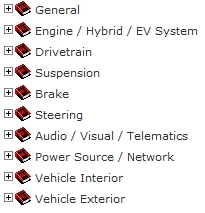

The Repair Manual consists of the following Categories, each of which contains related Sections.

Select the item to check from the tree, and display the Contents.
GTS linkage is possible if GTS is connected. The Execute button is displayed in steps where GTS is used to perform diagnosis. The Execute button can be used to call GTS functions directly.
See Start GTS functions from the Repair Manual for details.